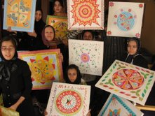

|
|
نمایشگاه نقاشی گیزلا وارگا سینایی و دختران امید مهر
شنبه9 شهریور 1387

تغییر برای برابری - نمایشگاه نقاشی گیزلا وارگا سینایی با همکاری بنیاد امید مهر از روز شنبه 9 شهریور تا دوشنبه 11 شهریور در نگارخانه دی برگزار می شود.
گیزلا وارگا سینایی نقاش معاصر مجار- ایرانی، در این نمایشگاه ، نتیجه کارگاه های نقاشی اش را با دختران بنیاد غیر دولتی- غیر انتفای امید مهر، به نمایش خواهد گذاشت.
درآمد حاصل از این نمایشگاه که در آن 37 اثر بفروش می رسد، به نفع بنیاد امید مهر است و برای کمک به برگزاری کارگاه های مشابهی برای دختران دیگر.
بنیاد امید مهر، به دختران در معرض آسیب، حرفه آموزی و مهارت یابی آموزش می دهد. این دختران با گذراندن کلاسهایی مثل خیاطی، کامپیوتر، خلاقیت، آشپزی، حسابداری و ... تلاش می کنند تا شرایط دشوار زندگی شان را با آموختن حرفه، و وارد شدن به بازار کار تغییر دهند.
گیزلا وارگا سینایی ، پیش از این نیز با برگزاری نمایشگاه مشابهی که نتیجه کار کارگاهی اش با بیماران سرطانی بود. به نفع بیماران سرطانی و نیز به نفع برنامه کمک به کودکان گرسنه (برنامه جهانی غذای سازمان ملل) نمایشگاه هایی را برگزار کرده بود. او همچنین در چندین کشور کار آموزش به کودکان و زنان آسیب دیده یا در معرض آسیب را دنبال کرده و با برپایی نمایشگاه هایی از آثار ایشان، توجه عموم را برای کمک به آنها جلب کرده است.
کارگاه های نقاشی او همچنین نوعی هنر - درمانی است برای کمک به کسانی که برای تغییر شرایط زندگی شان نیاز به تغییر شرایط روحی دارند. نقاشی ها همه در چارچوب "ماندالا" ترسیم شده اند. ماندالا یک نماد هنری برگزفته شده از آیین های مذهبی – شرقی (تبت) است. به گفته گیزلا، نقشهای ماندالا که از تکرار موتیفها در دایره ای که در یک مربع قرار دارد، درست می شود، به خاطر نیاز به دقت و حوصله زیاد و در عین حال ساده بودن، تاثیر خیلی خوبی بر افراد می گذارد و به آنها تمرکز، امید و اعتماد به نفس می دهد.
این نمایشگاه از شنبه تا دوشنبه از ساعت 16 تا 20 (نیاوران- ابتدای پاسداران- تنگستان چهارم- کوچه ناز۱- بن بست ترانه- پلاک ۳) برپاست.